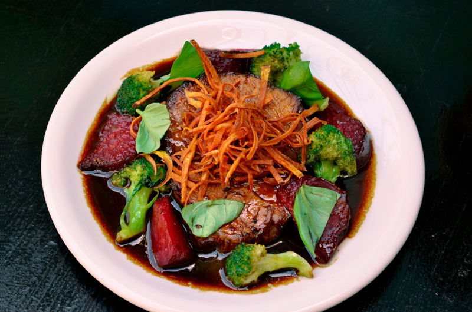
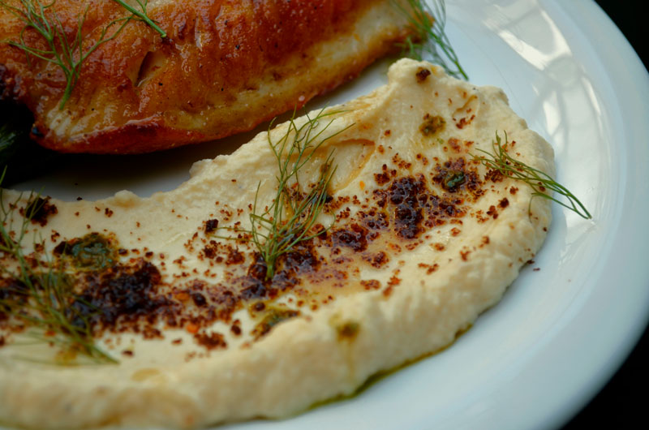
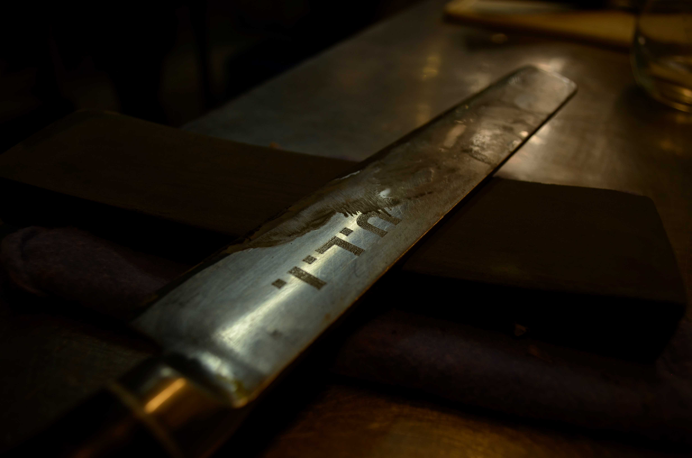
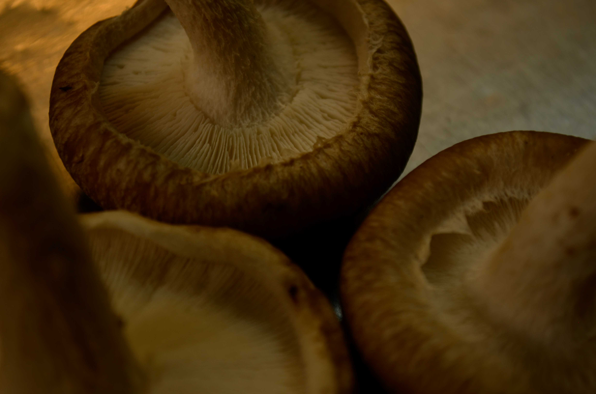
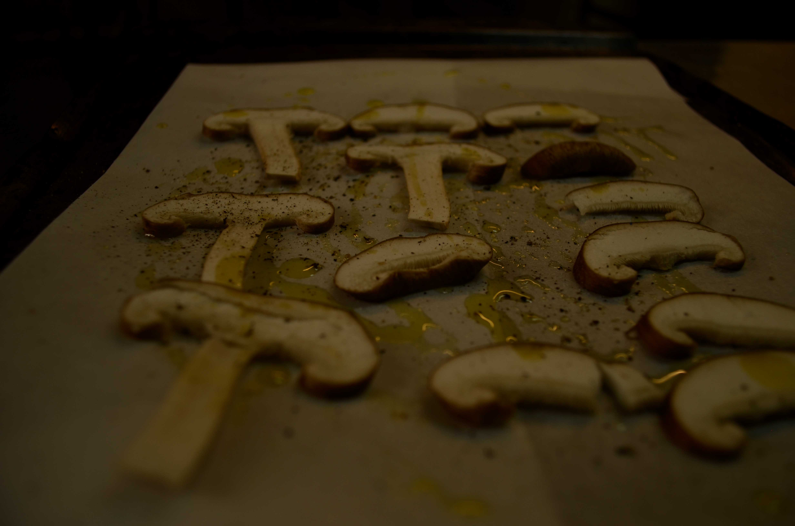
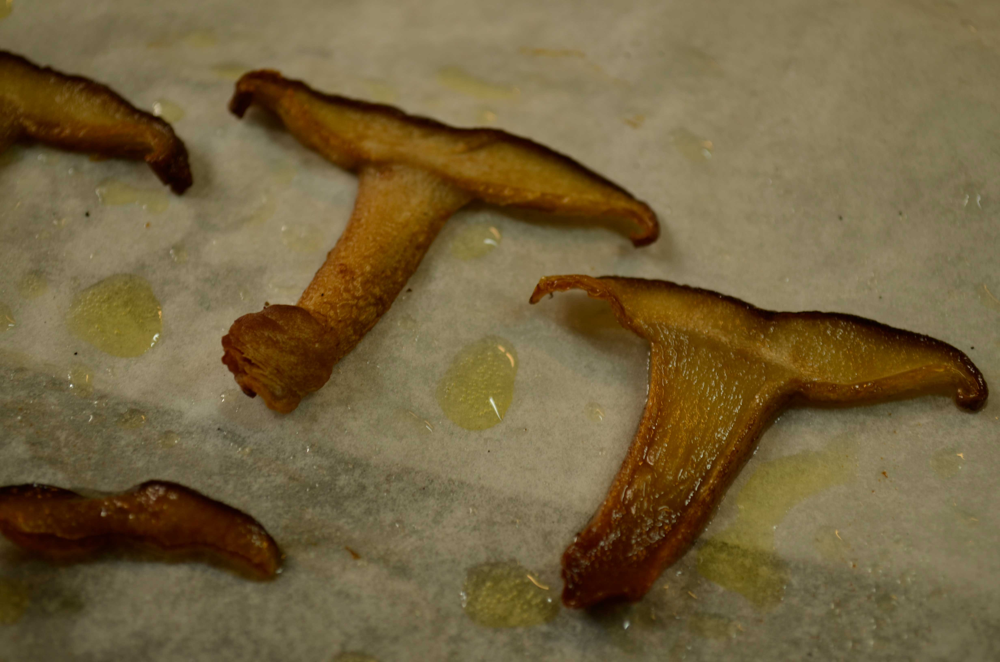

Home
Music
Bio
Contact
Gallery
Original
Original
Animated
Fish
Cenital Plane
Mid Plane
Follow Me
Original

Animated
Plano Cenital
Plano Medio

Followme
Portobello's time




Portobellos horneados
Step
Precedure
Observation
1
Sharp Knife
Carefully slide both sides of the knife over the rock, previously wet
2
Wash Portobellos
Cut off rotten parts. Make sure dirt is gone
3
Cut Portobellos
Dry them. Make Vertical slides of approximately
4
Spice & Bake
Organice them over an oven plate -also use butter paper- Olive oil + Salt + Pepper + Merken. Bake 8' -200°C-
Stir Fry Portobellos